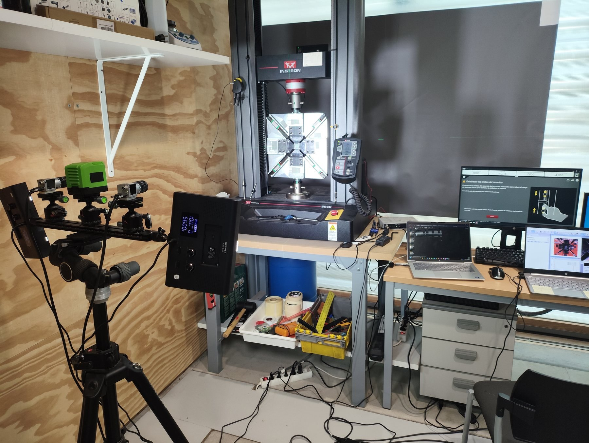
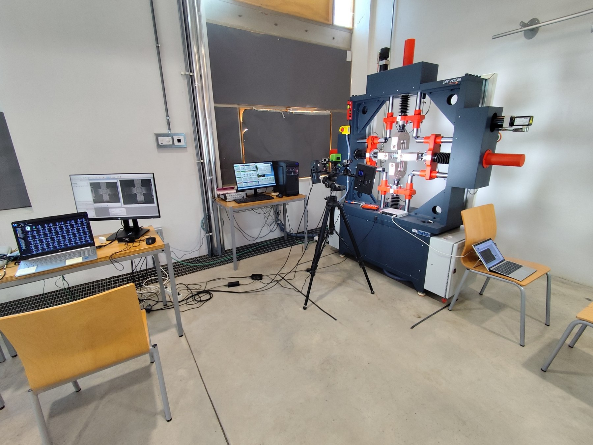
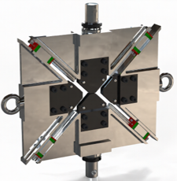

Comparison of the in-plane shear response of a FRP obtained by biaxial tension-compression test and standard methods
M.C. Serna Moreno · S. Horta Muñoz · J. García-Delgado
Resultados científicos, de normalización y de transferencia obtenidos dentro de la línea de CORA. Varios resultados son compartidos con RENO y BISHEAR; se incluyen cuando contribuyen directamente a los objetivos de CORA sobre caracterización a cortadura, comparación de ensayos, accesibilidad y normalización.
M.C. Serna Moreno · S. Horta Muñoz · J. García-Delgado
Composites Science and Technology 276 (2026) 111519
J.A. Sanz-Herrera · M.C. Serna Moreno · S. Horta Muñoz · R. Chamorro
Composite Structures 387 (2026) 120278
M.C. Serna Moreno · S. Horta Muñoz · J.J. López Cela
Revista de Materiales Compuestos (2025)
M.C. Serna Moreno · S. Horta Muñoz
Materiales Compuestos 9 (2026)

La especificación define el método de ensayo de cortadura basado en carga biaxial tracción–compresión sobre probetas cruciformes. CORA toma este pre-estándar como punto de partida técnico para su validación, la comparación con métodos de cortadura consolidados y el desarrollo posterior hacia una normalización completa.

CORA permitió adquirir la nueva máquina de ensayos biaxial Servosis con cuatro actuadores sincronizados y cuatro células de carga independientes, reforzando la capacidad experimental disponible en INAIA/UCLM.

Título: Dispositivo para realizar ensayos biaxiales de tracción-compresión en una máquina uniaxial.
Solicitante: Universidad de Castilla-La Mancha.
Inventores: María del Carmen Serna Moreno, Sergio Horta Muñoz, Ayman Berrem Khalid y Claudia Llario Alegre.
Fecha de recepción: 30 de diciembre de 2025. La solicitud se encuentra en tramitación y no se presenta como un derecho concedido.